Circuitos CA
Introducción
"AC" significaAalternandoCcorriente, que puede referirse a voltaje o corriente que alterna en polaridad o dirección, respectivamente. Estos experimentos están diseñados para presentarle varios conceptos importantes específicos de la CA.
Una fuente conveniente de voltaje CA es la toma de corriente doméstica, que presenta un riesgo importante de descarga eléctrica. Para minimizar este riesgo y al mismo tiempo aprovechar la conveniencia de esta fuente de CA, una pequeñafuente de alimentaciónserá el primer proyecto, consistente en untransformadorque reduce el voltaje peligroso (110 a 120 voltios CA, RMS) a 12 voltios o menos. El título "fuente de alimentación" es algo engañoso. Este dispositivo no actúa realmente como fuente osuministrardel poder, sino más bien como un poderconvertidor, para reducir el voltaje peligroso de la toma de corriente a un nivel mucho más seguro.
Transformador — fuente de alimentación
PIEZAS Y MATERIALES
- Transformador de potencia, reductor de 120 VCA a 12 VCA, con devanado secundario con derivación central (catálogo de Radio Shack # 273-1365, 273-1352 o 273-1511).
- Regleta de terminales con al menos tres terminales.
- Enchufe y cable de alimentación de pared para el hogar.
- Interruptor de cable de línea.
- Caja (opcional).
- Fusible y portafusibles (opcional).
Los transformadores de potencia se pueden obtener de radios viejas, que generalmente se pueden conseguir en una tienda de segunda mano por unos pocos dólares (¡o menos!). La radio también proporcionaría el cable de alimentación y el enchufe necesarios para este proyecto. Los interruptores de cable de línea se pueden conseguir en una ferretería. Sin embargo, si quieres estar absolutamente seguro de qué tipo de transformador vas a comprar, debes comprar uno en una tienda de suministros electrónicos.
Si decide equipar su fuente de alimentación con un fusible, asegúrese de conseguir uno.acción lenta, ogolpe lentofusible. Los transformadores pueden generar altas corrientes de "sobretensión" cuando se conectan inicialmente a una fuente de CA, y estas corrientes transitorias quemarán un fusible de acción rápida. Determine la clasificación de corriente adecuada del fusible dividiendo la clasificación "VA" del transformador por 120 voltios: en otras palabras, calcule la corriente total permitida del devanado primario y dimensione el fusible en consecuencia.
REFERENCIAS CRUZADAS
Lecciones en circuitos eléctricos, Volumen 2, capítulo 1: "Teoría básica de CA"
Lecciones en circuitos eléctricos, Volumen 2, capítulo 9: "Transformers"
OBJETIVOS DE APRENDIZAJE
- Comportamiento de reducción de tensión del transformador.
- Propósito de los devanados roscados.
- Técnicas de cableado seguro para cables de alimentación.
DIAGRAMA ESQUEMÁTICO
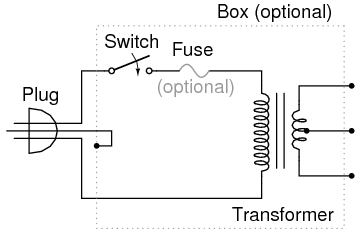
ILUSTRACIÓN
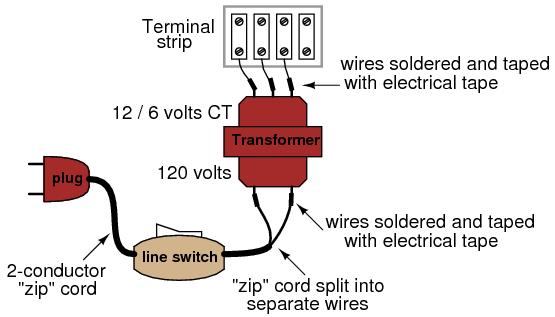
INSTRUCCIONES
¡Advertencia! Este proyecto implica el uso de voltajes peligrosos.Debe asegurarse de que todos los conductores de alto voltaje (alimentación doméstica de 120 voltios) estén aislados de forma segura contra contactos accidentales. No se deben ver cables pelados en ninguna parte del lado "primario" del circuito del transformador. Asegúrate desoldartodas las conexiones de cables para que estén seguras y use cinta aislante real (¡no cinta adhesiva, cinta adhesiva, cinta de embalaje ni ningún otro tipo!) para aislar las conexiones soldadas.
Si desea encerrar el transformador dentro de una caja, puede utilizar una caja de "conexión" eléctrica, adquirida en una ferretería o casa de suministros eléctricos. Si la carcasa utilizada es de metal en lugar de plástico, se debe utilizar un enchufe de tres clavijas, con la clavija de "tierra" (la más larga del enchufe) conectada directamente a la caja de metal para máxima seguridad.
Antes de enchufar el enchufe a una toma de pared, haga unacontrol de seguridadcon un óhmetro. Con el interruptor de línea en la posición "on", mida la resistencia entre cualquiera de las clavijas del enchufe y la caja del transformador. Debería haber una resistencia infinita (máxima). Si el medidor registra continuidad (algún valor de resistencia menor que infinito), entonces tienes un "cortocircuito" entre uno de los conductores de alimentación y la caja, ¡lo cual es peligroso!
A continuación, verifique la continuidad de los devanados del transformador. Con el interruptor de línea en la posición "encendido", debe haber una pequeña cantidad de resistencia entre las dos clavijas del enchufe. Cuando el interruptor está "apagado", la indicación de resistencia debe aumentar hasta el infinito (circuito abierto, sin continuidad). Mida la resistencia entre pares de cables en el lado secundario. Estos devanados secundarios deberían registrar resistencias mucho más bajas que los primarios. ¿Por qué es esto?
Conecte el cable a una toma de pared y encienda el interruptor. Debería poder medir el voltaje de CA en el lado secundario del transformador, entre pares de terminales. Entre dos de estos terminales, debes medir unos 12 voltios. Entre cualquiera de estos dos terminales y el tercer terminal, debes medir la mitad. Este tercer cable es el cable de "derivación central" del devanado secundario.
Sería aconsejable mantener este proyecto ensamblado para utilizarlo en otros experimentos que se muestran en este libro. De ahora en adelante, designaré esta "fuente de alimentación de CA de bajo voltaje" usando esta ilustración:
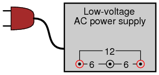
SIMULACIÓN POR COMPUTADORA
Esquema con números de nodo SPICE:
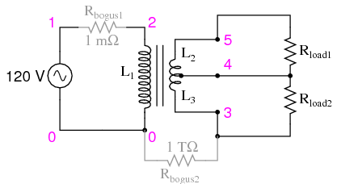
Netlist (cree un archivo de texto que contenga el siguiente texto, textualmente):
transformer with center-tap secondary v1 1 0 ac 120 sin rbogus1 1 2 1e-3 l1 2 0 10 l2 5 4 0.025 l3 4 3 0.025 k1 l1 l2 0.999 k2 l2 l3 0.999 k3 l1 l3 0.999 rbogus2 3 0 1e12 rload1 5 4 1k rload2 4 3 1k * Sets up AC analysis at 60 Hz: .ac lin 1 60 60 * Prints primary voltage between nodes 2 y 0: .print ac v(2,0) * Prints (top) secondary voltage between nodes 5 y 4: .print ac v(5,4) * Prints (bottom) secondary voltage between nodes 4 y 3: .print ac v(4,3) * Prints (total) secondary voltage between nodes 5 y 3: .print ac v(5,3) .end
Build a transformer
PIEZAS Y MATERIALES
- Barra plana de acero, 4 piezas
- Varios pernos, tuercas y arandelas
- 28 gauge "magnet" wire
- Fuente de alimentación de CA de bajo voltaje
El "alambre magnético" es un alambre de pequeño calibre aislado con una fina capa de esmalte. Está destinado a ser utilizado para fabricar electroimanes, porque muchas "vueltas" de alambre pueden enrollarse en una bobina de diámetro relativamente pequeño. Cualquier calibre de alambre funcionará, pero se recomienda el calibre 28 para hacer una bobina con tantas vueltas como sea posible en un diámetro pequeño.
REFERENCIAS CRUZADAS
Lecciones en circuitos eléctricos, Volumen 2, capítulo 9: "Transformers"
OBJETIVOS DE APRENDIZAJE
- Efectos del electromagnetismo.
- Efectos de la inducción electromagnética.
- Efectos del acoplamiento magnético sobre la regulación de voltaje.
- Efectos de las vueltas de bobinado sobre la relación de "pasos".
DIAGRAMA ESQUEMÁTICO
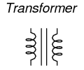
ILUSTRACIÓN
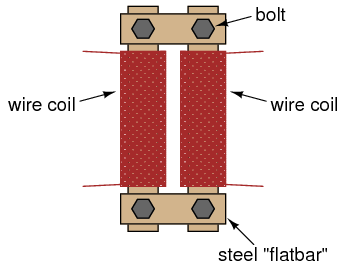
INSTRUCCIONES
Envuelva dos barras de acero de igual longitud con una fina capa de cinta aislante eléctrica. Enrolle varios cientos de vueltas de alambre magnético alrededor de estas dos barras. Puede hacer estos devanados con un número igual o desigual de vueltas, dependiendo de si desea o no que el transformador pueda "incrementar" el voltaje hacia arriba o hacia abajo. Recomiendo vueltas iguales para empezar, y luego experimentar con bobinas de número de vueltas desigual.
Une esas barras en un rectángulo con otras dos barras de acero más cortas. Utilice pernos para asegurar las barras juntas (se recomienda taladrar orificios para pernos a través de las barrasanteslos envuelves con alambre).
Verifique si hay devanados en cortocircuito (lectura del óhmetro entre los extremos del cable y la barra de acero) después de que haya terminado de envolver los devanados. No debe haber continuidad (resistencia infinita) entre el devanado y la barra de acero. Verifique la continuidad entre los extremos del devanado para asegurarse de que el cable no esté roto en algún lugar dentro de la bobina. Si cualquiera de las mediciones de resistencia indica un problema, se debe volver a hacer el devanado.
Alimente su transformador con la salida de bajo voltaje de la "fuente de alimentación" descrita al principio de este capítulo.NoAlimente su transformador directamente desde el voltaje del enchufe de pared (120 voltios), ya que sus devanados caseros realmente no están clasificados para ningún voltaje significativo.
Mida el voltaje de salida (bobinado secundario) de su transformador con un voltímetro de CA. Conecte una carga de algún tipo (¡las bombillas son buenas!) al devanado secundario y vuelva a medir el voltaje. Tenga en cuenta el grado de "caída" de voltaje en el devanado secundario a medida que aumenta la corriente de carga.
Afloje o retire los pernos de conexión de una de las piezas de barra corta, aumentando así lareluctancia(análogo aresistencia) del "circuito" magnético que acopla los dos devanados. Tenga en cuenta el efecto sobre el voltaje de salida y la "caída" del voltaje bajo carga.
Si ha fabricado su transformador con devanados de vueltas desiguales. Pruébelo en modo de aumento versus modo de reducción, alimentando diferentes cargas de CA.
Variable inductor
PIEZAS Y MATERIALES
- Tubo de papel, de un rollo de papel higiénico.
- Barra de hierro o acero, lo suficientemente grande como para llenar casi el diámetro de un tubo de papel.
- 28 gauge "magnet" wire
- Fuente de alimentación de CA de bajo voltaje
- Lámpara incandescente, clasificada para voltaje de suministro de energía.
REFERENCIAS CRUZADAS
Lecciones en circuitos eléctricos, Volumen 1, capítulo 14: "Magnetismo y Electromagnetismo"
Lecciones en circuitos eléctricos, Volumen 1, capítulo 15: "Inductores"
Lecciones en circuitos eléctricos, Volumen 2, capítulo 3: "Reactancia e impedancia - Inductiva"
OBJETIVOS DE APRENDIZAJE
- Efectos de la permeabilidad magnética sobre la inductancia.
- Cómo la reactancia inductiva puede controlar la corriente en un circuito de CA.
DIAGRAMA ESQUEMÁTICO
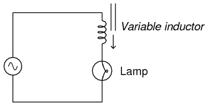
ILUSTRACIÓN
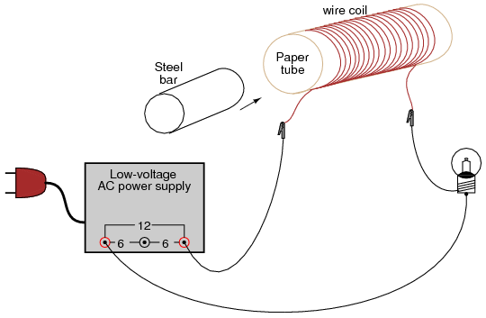
INSTRUCCIONES
Enrolle cientos de vueltas de alambre magnético alrededor del tubo de papel. Conecte este inductor casero en serie con una fuente de alimentación de CA y una lámpara para formar un circuito. Cuando el tubo esté vacío, la lámpara debería brillar intensamente. Cuando la barra de acero se inserta en el tubo, la lámpara se atenúa debido al aumento de la inductancia (L) y, en consecuencia, al aumento de la reactancia inductiva (X).L).
Intente utilizar barras de diferentes materiales, como cobre y acero inoxidable, si están disponibles. No todos los metales tienen el mismo efecto, debido a diferencias en el campo magnético.permeabilidad.
Sensitive audio detector
PIEZAS Y MATERIALES
- Auriculares de audio de "copa cerrada" de alta calidad
- Conector para auriculares: receptáculo hembra para enchufe de auriculares (catálogo de Radio Shack # 274-312)
- Pequeño transformador de potencia reductor (catálogo de Radio Shack # 273-1365 o equivalente, usando la toma del devanado secundario de 6 voltios)
- Dos diodos rectificadores 1N4001 (catálogo de Radio Shack # 276-1101)
- 1 kΩ resistor
- 100 kΩ potentiometer (Radio Shack catalog # 271-092)
- Dos postes de conexión estilo conector "banana", u otro hardware terminal, para conexión al circuito del potenciómetro (catálogo de Radio Shack # 274-662 o equivalente)
- Caja de montaje de plástico o metal.
En cuanto a los auriculares, cuanto mayor sea el índice de "sensibilidad" en decibeles (dB), mejor, pero escuchar es creer: si realmente quieres construir un detector con la máxima sensibilidad para pequeñas señales eléctricas, deberías probar algunos modelos diferentes de auriculares en una tienda de audio de alta calidad y "escuchar" cuáles producen un sonido audible para elmás bajoajuste de volumen en una radio o reproductor de CD. ¡Cuidado, ya que podrías gastar cientos de dólares en un par de auriculares para obtener la mejor sensibilidad! Pero anímate: he usado unoldpar de auriculares de la marca Radio Shack "Realistic" con resultados perfectamente adecuados, por lo que no es necesario comprar los mejores.
Normalmente, el transformador utilizado en este tipo de aplicación (adaptación de impedancia de altavoces de audio) se denomina "transformador de audio", y sus devanados primario y secundario están representados por valores de impedancia (1000 Ω: 8 Ω) en lugar de voltajes. Un transformador de audio funcionará, pero he descubierto que los pequeños transformadores reductores de potencia con una relación de 120/6 voltios son perfectamente adecuados para la tarea, más baratos (especialmente si se toman de un viejo radio despertador de una tienda de segunda mano) y mucho más resistentes.
La clasificación de tolerancia (precisión) para la resistencia de 1 kΩ es irrelevante. El potenciómetro de 100 kΩ es una opción recomendada para incorporar en este proyecto, ya que le da al usuario control sobre el volumen de cualquier señal determinada. Aunque uncinta de audioEl potenciómetro sería apropiado para esta aplicación, no es necesario. Acono linealEl potenciómetro funciona bastante bien.
REFERENCIAS CRUZADAS
Lecciones en circuitos eléctricos, Volumen 1, capítulo 8: "Circuitos de medición de CC"
Lecciones en circuitos eléctricos, Volumen 2, capítulo 9: "Transformers"
Lecciones en circuitos eléctricos, Volumen 2, capítulo 12: "Circuitos de medición de CA"
OBJETIVOS DE APRENDIZAJE
- practica de soldadura
- Uso de un transformador para igualar impedancias.
- Detección de señales eléctricas extremadamente pequeñas.
- Usar diodos para "recortar" el voltaje a un nivel máximo
DIAGRAMA ESQUEMÁTICO
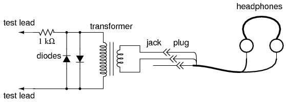
ILUSTRACIÓN
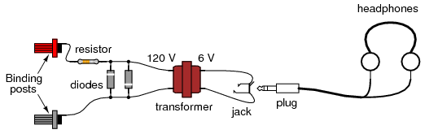
INSTRUCCIONES
Este experimento es idéntico en construcción al "Detector de voltaje sensible" descrito en el capítulo de experimentos de CC. Si ya ha construido este detector, puede omitir este experimento.
Los auriculares, que probablemente sean unidades estéreo (altavoces izquierdo y derecho separados) tendrán un enchufe de tres contactos. Te conectarás solo a dos de esos tres puntos de contacto. Si solo tiene unos auriculares "mono" con un enchufe de dos contactos, simplemente conéctelos a esos dos puntos de contacto. Puede conectar los dos altavoces estéreo en serie o en paralelo. Descubrí que la conexión en serie funciona mejor, es decir, produce la mayor cantidad de sonido a partir de una señal pequeña:
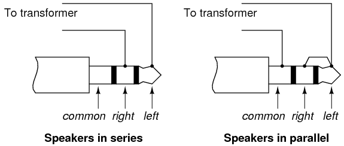
Suelde bien todas las conexiones de cables. Este sistema detector es extremadamente sensible y cualquier conexión de cables suelta en el circuito agregará ruido no deseado a los sonidos producidos por la señal de voltaje medida. Los dos diodos conectados en paralelo con el devanado primario del transformador, junto con la resistencia de 1 kΩ conectada en serie, trabajan juntos para "recortar" el voltaje de entrada a un máximo de aproximadamente 0,7 voltios. Esto hace una cosa y sólo una cosa: limitar la cantidad de sonido que pueden producir los auriculares. El sistema funcionará sin los diodos y la resistencia en su lugar, pero no habrá límite para el volumen del sonido en el circuito, y el sonido resultante causado al conectar accidentalmente los cables de prueba a través de una fuente de voltaje sustancial (como una batería) puede ser ensordecedor.
Los postes de unión proporcionan puntos de conexión para un par de sondas de prueba con enchufes tipo banana, una vez que los componentes del detector están montados dentro de una caja. Puedes usar sondas multímetro comunes o hacer tus propias sondas con pinzas de cocodrilo en los extremos para una conexión segura a un circuito.
Los detectores están destinados a ser utilizados para equilibrar circuitos de medición de puentes, circuitos de voltímetro potenciométricos (equilibrio nulo) y detectar señales de CA ("corriente alterna") de amplitud extremadamente baja en el rango de frecuencia de audio. Es un valioso equipo de prueba, especialmente para el experimentador de bajo presupuesto sin osciloscopio. También es valioso porque permite utilizar un sentido corporal diferente para interpretar el comportamiento de un circuito.
Para la conexión a través de cualquier fuente de voltaje no trivial (1 voltio y mayor), se debe atenuar la sensibilidad extremadamente alta del detector. Esto se puede lograr conectando un divisor de voltaje al "frente" del circuito:
DIAGRAMA ESQUEMÁTICO
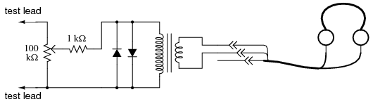
ILUSTRACIÓN
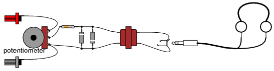
Ajuste el potenciómetro divisor de voltaje de 100 kΩ a aproximadamente el rango medio cuando detecte inicialmente una señal de voltaje de magnitud desconocida. Si el sonido es demasiado alto, baje el potenciómetro y vuelva a intentarlo. Si está demasiado blando, súbelo y vuelve a intentarlo. Este detector incluso detecta señales de CC y de radiofrecuencia (frecuencias por debajo y por encima del rango de audio, respectivamente), y se escucha un "clic" cada vez que los cables de prueba hacen o rompen el contacto con la fuente bajo prueba. Con mis auriculares baratos, he podido detectar corrientes de menos de 1/10 de microamperio (< 0,1 µA) de CC y señales de RF de baja magnitud similares de hasta 2 MHz.
Una buena demostración de la sensibilidad del detector es tocar ambos cables de prueba con la punta de la lengua, con el ajuste de sensibilidad al máximo. El voltaje producido por el contacto entre el metal y el electrolito (llamadovoltaje galvánico) es muy pequeño, pero suficiente para producir suaves sonidos de "clic" cada vez que los cables hacen y rompen el contacto con la piel húmeda de la lengua.
Intente desenchufar el conector de los auriculares del conector (receptáculo) y, de manera similar, tocarlo con la punta de la lengua. Aún debería escuchar sonidos de clics suaves, pero su amplitud será mucho menor. Los altavoces de los auriculares son dispositivos de "baja impedancia": requieren bajo voltaje y corriente "alta" para ofrecer una potencia de sonido sustancial. La impedancia es una medida de oposición a todas y cada una de las formas de corriente eléctrica, incluida la corriente alterna (CA). La resistencia, en comparación, es una medida estricta de oposición adirectocorriente (CC). Al igual que la resistencia, la impedancia se mide en la unidad Ohm (Ω), pero en las ecuaciones se simboliza con la letra mayúscula "Z" en lugar de la letra mayúscula "R". Usamos el término "impedancia" para describir la oposición de los auriculares a la corriente porque normalmente los auriculares están sujetos principalmente a señales de CA, no a CC.
La mayoría de las fuentes de señal pequeñas tienen impedancias internas altas, algunas mucho más altas que los 8 Ω nominales de los parlantes de los auriculares. Ésta es una forma técnica de decir que son incapaces de suministrar cantidades sustanciales de corriente. Como predice el teorema de transferencia de potencia máxima, los parlantes de los auriculares entregarán la máxima potencia de sonido cuando su impedancia "coincida" con la impedancia de la fuente de voltaje. El transformador hace esto. El transformador también ayuda a detectar pequeñas señales de CC al producir un "contragolpe" inductivo cada vez que se interrumpe el circuito del cable de prueba, "amplificando" así la señal al almacenar magnéticamente energía eléctrica y liberarla repentinamente a los parlantes de los auriculares.
Al igual que con el experimento de la fuente de alimentación de CA de bajo voltaje, recomiendo construir este detector de manera permanente (montando todos los componentes dentro de una caja y proporcionando buenos cables de prueba) para que pueda usarse fácilmente en el futuro. Construido así, podría verse así:
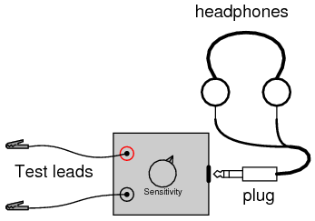
Sensing AC magnetic fields
PIEZAS Y MATERIALES
- Detector de audio con auriculares.
- Bobina de electroimán de relé o solenoide.
Lo que se necesita para una bobina de electroimán es una bobina conmuchosvueltas de cable, para producir el mayor voltaje posible a partir de la inducción con campos magnéticos parásitos. La bobina extraída de un relé o solenoide viejo funciona bien para este propósito.
REFERENCIAS CRUZADAS
Lecciones en circuitos eléctricos, Volumen 2, capítulo 7: "Señales de CA de frecuencia mixta"
OBJETIVOS DE APRENDIZAJE
- Efectos de la inducción electromagnética.
- Técnicas de blindaje electromagnético.
DIAGRAMA ESQUEMÁTICO
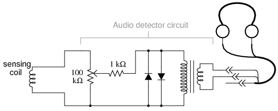
ILUSTRACIÓN
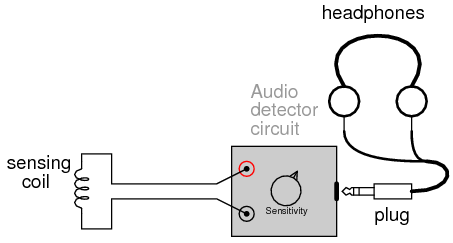
INSTRUCCIONES
Usando el circuito detector de audio explicado anteriormente para detectar voltaje de CA en las frecuencias de audio, una bobina de cable puede servir como sensor de campos magnéticos de CA. Los voltajes producidos por la bobina serán bastante pequeños, por lo que es recomendable ajustar el control de sensibilidad del detector al "máximo".
Hay muchas fuentes de campos magnéticos de CA que se pueden encontrar en el hogar promedio. Intente, por ejemplo, sostener la bobina cerca de una pantalla de televisión o de una caja de interruptores. La orientación de la bobina es tan importante como su proximidad a la fuente, ¡como pronto descubrirás por tu cuenta! Si desea escuchar tonos más interesantes, intente sostener la bobina cerca de la placa base de una computadora en funcionamiento (¡tenga cuidado de no "cortocircuitar" ninguna conexión en la placa de circuito de la computadora con ninguna pieza metálica expuesta en la bobina sensora!), o a su disco duro mientras se realiza una operación de lectura/escritura.
One muyUna fuerte fuente de campos magnéticos de CA es el proyecto de transformador casero descrito anteriormente. Intente experimentar con varios grados de "acoplamiento" entre las bobinas (las barras de acero firmemente unidas, versus sueltas, versus desmanteladas). Otra fuente es el circuito de lámpara y inductor variable que se describe en otra sección de este capítulo.
Tenga en cuenta que el contacto físico con una fuente de campo magnético es innecesario: los campos magnéticos se extienden por el espacio con bastante facilidad. También puedes intentar "proteger" la bobina de una fuente fuerte utilizando varios materiales. Pruebe con papel de aluminio, papel, chapa de acero, plástico o cualquier otro material que se le ocurra. ¿Qué materiales funcionan mejor? ¿Por qué? ¿Qué ángulos (orientaciones) de la posición de la bobina minimizan el acoplamiento magnético (dan como resultado un mínimo de señal detectada)? ¿Qué nos dice esto con respecto al posicionamiento del inductor si la interferencia entre circuitos de otros inductores es algo malo?
Si los campos magnéticos perdidos como estos representan o no algún peligro para la salud del cuerpo humano es un tema acaloradamente debatido. Una cosa está clara: en la sociedad moderna actual, ¡es fácil encontrar campos magnéticos de bajo nivel en todas las frecuencias!
Sensing AC electric fields
PIEZAS Y MATERIALES
- Detector de audio con auriculares.
REFERENCIAS CRUZADAS
Lecciones en circuitos eléctricos, Volumen 2, capítulo 7: "Señales de CA de frecuencia mixta"
OBJETIVOS DE APRENDIZAJE
- Efectos del acoplamiento electrostático (capacitivo).
- Técnicas de blindaje electrostático.
DIAGRAMA ESQUEMÁTICO
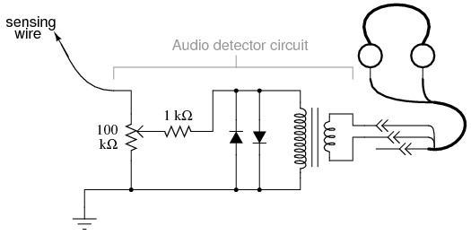
ILUSTRACIÓN
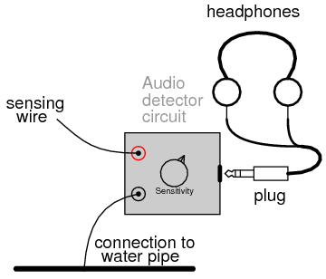
INSTRUCCIONES
Conecte a tierra un cable del detector a un objeto metálico en contacto con la tierra (suciedad). Casi cualquier tubería de agua o grifo de una casa será suficiente. Tome el otro cable y manténgalo cerca de un aparato eléctrico o lámpara.¡No intente hacer contacto con el aparato ni con ningún conductor interno!Cualquier campo eléctrico de CA producido por el aparato se escuchará en los auriculares como un zumbido.
Intente sostener el cable en diferentes posiciones junto a una buena y potente fuente de campos eléctricos. Intente usar un trozo de papel de aluminio sujeto al extremo del cable para maximizar la capacitancia (y por lo tanto su capacidad para interceptar un campo eléctrico). Intente utilizar diferentes tipos de material para "proteger" el cable de una fuente de campo eléctrico. ¿Qué materiales funcionan mejor? ¿Cómo se compara esto con el aire acondicionado?magnéticoexperimento de campo?
Al igual que con los campos magnéticos, existe controversia sobre si los campos eléctricos parásitos como estos representan algún peligro para la salud del cuerpo humano.
Automotive alternator
PIEZAS Y MATERIALES
- Alternador automotriz (se requiere uno, pero se recomiendan dos)
Los alternadores viejos se pueden conseguir a precios bajos en los depósitos de chatarra de automóviles. Muchos astilleros ya tienen alternadores desmontados del automóvil, para su comodidad. sínotRecomendamos pagar el precio completo por un alternador nuevo, ya que las unidades usadas cuestan mucho menos dinero y funcionan igual de bien para los propósitos de este experimento.
Recomiendo encarecidamente utilizar un alternador de la marca Delco-Remy. Este es el tipo utilizado en los vehículos de General Motors (GMC, Chevrolet, Cadillac, Buick, Oldsmobile). Delco-Remy ha producido un modelo en particular desde principios de la década de 1960 con pocos cambios de diseño. es unmuyUnidad común para ubicar en un depósito de demolición y muy fácil de trabajar.
Si obtiene dos alternadores, podrá utilizar uno como generador y el otro como motor. Los pasos necesarios para preparar un alternador como generador trifásico y como motor trifásico son los mismos.
REFERENCIAS CRUZADAS
Lecciones en circuitos eléctricos, Volumen 1, capítulo 14: "Magnetismo y Electromagnetismo"
Lecciones en circuitos eléctricos, Volumen 2, capítulo 10: "Circuitos de CA polifásicos"
OBJETIVOS DE APRENDIZAJE
- Efectos del electromagnetismo
- Efectos de la inducción electromagnética.
- Construcción de máquinas electromagnéticas reales.
- Construcción y aplicación de devanados trifásicos.
DIAGRAMA ESQUEMÁTICO
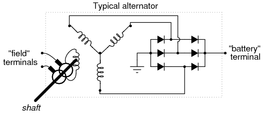
Un alternador de automóvil es un generador trifásico con un circuito rectificador incorporado que consta de seis diodos. A medida que la polea (la mayoría de la gente la llama "polea") gira mediante una correa conectada al cigüeñal del motor del automóvil, se hace girar un imán a través de un conjunto estacionario de devanados trifásicos (llamadoestator), generalmente conectados en una configuración en Y. El imán giratorio es en realidad un electroimán, no un imán permanente. Los alternadores están diseñados de esta manera para que se pueda controlar la intensidad del campo magnético, de modo que el voltaje de salida se pueda controlar independientemente de la velocidad del rotor. Esta bobina magnética del rotor (llamadabobina de campo, o simplementecampo) se energiza con la energía de la batería, por lo que se necesita una pequeña cantidad de energía eléctrica de entrada al alternador para que genere una gran cantidad de energía de salida.
La energía eléctrica se conduce a la bobina del campo giratorio a través de un par de "anillos colectores" de cobre montados concéntricamente en el eje, contactados por "escobillas" de carbón estacionarias. Las escobillas se mantienen en firme contacto con los anillos colectores mediante la presión del resorte.
Muchos alternadores modernos están equipados con circuitos "reguladores" incorporados que encienden y apagan automáticamente la energía de la batería a la bobina del rotor para regular el voltaje de salida. Este circuito, si está presente en el alternador que elijas para el experimento, es innecesario y sólo impedirá tu estudio si se deja en su lugar. Siéntase libre de "quitarlo quirúrgicamente", solo asegúrese de dejar acceso a los terminales del cepillo para que pueda alimentar la bobina de campo con el alternador completamente ensamblado.
ILUSTRACIÓN
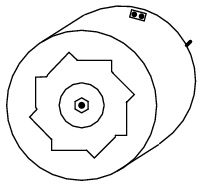
INSTRUCCIONES
Primero, consulte un manual de reparación de automóviles sobre los detalles específicos de su alternador. La documentación proporcionada en el libro que está leyendo ahora es lo más general posible para adaptarse a diferentes marcas de alternadores. Es posible que necesite información más específica y un manual de servicio es el mejor lugar para obtenerla.
Para este experimento, conectará cables a las bobinas dentro del alternador y los extenderá fuera de la caja del alternador, para una fácil conexión a los equipos y circuitos de prueba. Desafortunadamente, los terminales de conexión proporcionados por el fabricante no se adaptan a nuestras necesidades aquí, por lo que deberá realizar sus propias conexiones.
Desarme la unidad y ubique los terminales para conectar las dos escobillas de carbón. Suelde un par de cables a estos terminales (al menos de calibre 20) y extienda estos cables a través de los orificios de ventilación en la caja del alternador, asegurándose de que no se enganchen en el rotor giratorio cuando se vuelva a ensamblar y usar el alternador.
Ubique las conexiones de la línea trifásica que provienen de los devanados del estator y conecte los cables a ellas también, extendiendo estos cables fuera de la caja del alternador a través de algunos orificios de ventilación. Utilice el cable de mayor calibre con el que sea conveniente trabajar para estos cables, ya que pueden transportar una corriente sustancial. Al igual que con los cables de campo, colóquelos de tal manera que el rotor gire libremente cuando se vuelva a ensamblar el alternador. Los terminales de la línea de devanado del estator son fáciles de ubicar: los tres se conectan a tres terminales en el conjunto del diodo, generalmente con terminales de "anillo" soldados a los extremos de los cables.
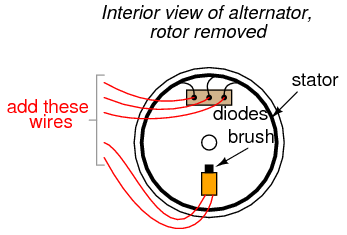
Le recomiendo que suelde terminales de anillo a sus cables y los fije debajo de las tuercas de los terminales junto con los extremos de los cables del estator, de modo que cada terminal del bloque de diodos asegure dos terminales de anillo.
Vuelva a montar el alternador, teniendo cuidado de asegurar las escobillas de carbón en una posición retraída para que el rotor no las dañe al volver a insertarlas. En los alternadores Delco-Remy, se proporciona un pequeño orificio en la mitad trasera de la caja, y también en la parte frontal del conjunto del portaescobillas, a través del cual se puede insertar un clip o un cable de calibre delgado para sujetar las escobillas contra la presión del resorte. Consulte el manual de servicio para obtener más detalles sobre el montaje del alternador.
Cuando se haya ensamblado el alternador, intente hacer girar el eje y escuche cualquier sonido que indique la colisión de piezas o cables enganchados. Si hay algún problema de este tipo, desmóntelo nuevamente y corrija lo que esté mal.
Cuando gire libremente como debería, conecte los dos cables de "campo" a una batería de 6 voltios. Conecte un voltímetro a dos de las conexiones de línea trifásica cualesquiera:
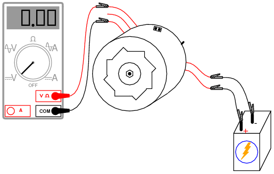
Con el multímetro configurado en la función "voltios CC",despaciogirar el eje del alternador. La lectura del voltímetro debe alternar entre positiva y negativa a medida que gira el eje: una demostración de que se genera voltaje alterno (voltaje CA) muy lento. Si esta prueba tiene éxito, cambie el multímetro a la configuración "voltios CA" e inténtelo nuevamente. Intente girar el eje lenta y rápidamente, comparando las lecturas del voltímetro entre las dos condiciones.
Cortocircuite dos cables de línea trifásicos cualesquiera e intente hacer girar el alternador. Lo que debe notar es que el eje del alternador se vuelve más difícil de girar. La gran carga eléctrica que ha creado a través del cortocircuito provoca una gran carga mecánica en el alternador, ya que la energía mecánica se convierte en energía eléctrica.
Ahora, intente conectar 12 voltios CC a los cables de campo. Repita las pruebas del voltímetro de CC, del voltímetro de CA y de cortocircuito descritas anteriormente. ¿Qué diferencia(s) notas?
Busque algún tipo de cargas de 6 o 12 voltios insensibles a la polaridad, como pequeñas lámparas incandescentes, y conéctelas a los cables de la línea trifásica. Envuelva una cuerda delgada o una cuerda pesada alrededor de la ranura de la polea ("polea") y haga girar el alternador rápidamente, y las cargas deberían funcionar.
Si tiene un segundo alternador, modifíquelo como modificó el primero, conectando cinco de sus propios cables a las escobillas de campo y a los terminales de la línea del estator, respectivamente. Luego podrás utilizarlo como motor trifásico, alimentado por el primer alternador.
Conecte cada uno de los cables de línea trifásicos del primer alternador a los respectivos cables del segundo alternador. Conecte los cables de campo de un alternador a una batería de 6 voltios. Este alternador será el generador. Enrolle la cuerda alrededor de la polea en preparación para hacerla girar. Tome los dos cables de campo del segundo alternador y córtelos. Este alternador será el motor:
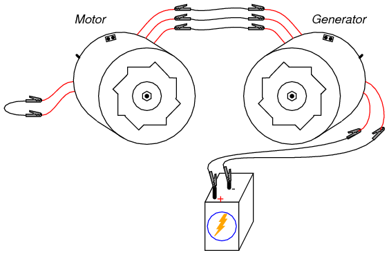
Haga girar el eje del generador mientras observa la rotación del eje del motor. Intente revertir cualquiertwode las conexiones de la línea trifásica entre las dos unidades y hacer girar el generador nuevamente. ¿Qué es diferente esta vez?
Conecte los cables de campo de la unidad del motor a una batería de 6 voltios (puede conectar en paralelo este campo con el campo de la unidad del generador, a través de los mismos terminales de la batería, si la batería es lo suficientemente fuerte como para entregar los varios amperios de corriente que ambas bobinas consumirán juntas). Esto magnetizará el rotor del motor. Intente hacer girar el generador nuevamente y observe cualquier diferencia en la operación.
En la primera configuración del motor, donde los cables de campo estaban simplemente en cortocircuito, el motor funcionaba como unmotor de inducción. En la segunda configuración, donde el rotor del motor estaba magnetizado, funcionó como unmotor sincrónico.
Si te sientes particularmente ambicioso y eres experto en técnicas de fabricación de metales, puedes crear tu propia plataforma generadora de alta potencia conectando el alternador modificado a una bicicleta. He creado un arreglo que se parece a este:
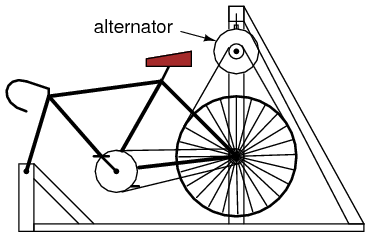
La rueda trasera impulsa la polea del generador con unlargocorrea trapezoidal. Este cinturón también sostiene la parte trasera de la bicicleta, manteniendo una tensión constante cuando el ciclista pedalea la bicicleta. El generador cuelga de una estructura de soporte de acero (usé tubos cuadrados soldados de 2 pulgadas, pero se podría hacer un marco de madera). Esta máquina no sólo es práctica, sino que también es lo suficientemente fiable como para utilizarla como máquina de ejercicios y su fabricación es económica:
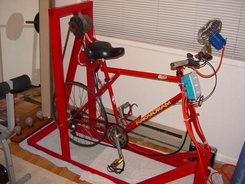
Puede ver un banco de tres bombillas "RV" de 12 voltios detrás de la unidad de la bicicleta (en la esquina inferior izquierda de la fotografía), que uso como carga cuando ando en bicicleta como máquina de ejercicio. Hay un conjunto de tres interruptores montados en la parte delantera de la bicicleta, donde puedo encender y apagar cargas mientras monto.
Al rectificar la energía CA trifásica producida, es posible hacer que el alternador alimente su propia bobina de campo con voltaje CC, eliminando la necesidad de una batería. Sin embargo, aún será necesaria alguna fuente independiente de voltaje CC para el arranque, ya que la bobina de campo debe estar energizada.antesSe puede producir cualquier energía CA.
Induction motor
PIEZAS Y MATERIALES
- Fuente de alimentación de CA: 120 VCA
- Condensador, 3,3 µF (o 2,2 µF) 120 VCA o 350 VCC, no polarizado
- 15 to 25 watt incandescent lamp o 820Ω 25 watt resistors
- Cable magnético #32 AWG
- tabla de madera de aprox. 5 pulgadas cuadradas.
- Cable de línea de CA con enchufe
- 1.75 inch dia. cardboard tubing (toilet paper roll)
- portalámparas
- Fuente de alimentación de CA: 220 VCA
- Condensador, 1,5 µF 240 VCA o 680 VCC, no polarizado
- 25 to 40 watt incandescent lamp o 820Ω 25 watt resistors
- Cable magnético #32 AWG
- tabla de madera de aprox. 15cm. cuadrado.
- Cable de línea de CA con enchufe
- 4.5 to 5 cm. dia. cardboard tubing.
- portalámparas
REFERENCIAS CRUZADAS
Lecciones en circuitos eléctricos, Volumen 2, capítulo 13: "Motores de CA", "Motores de inducción monofásicos", "Motor de condensador permanente dividido".
OBJETIVOS DE APRENDIZAJE
- Construir un motor de inducción de fase dividida con condensador permanente de CA.
- Para ilustrar la simplicidad del motor de inducción de CA.
DIAGRAMA ESQUEMÁTICO
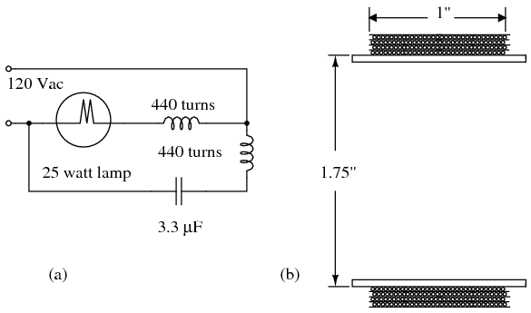
ILUSTRACIÓN
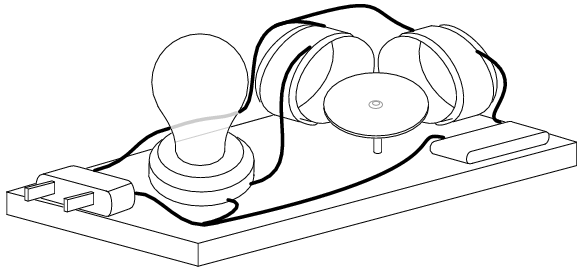
INSTRUCCIONES
Hay dos listas de piezas para elegir según la disponibilidad de 120 VCA o 220 VCA. Elija el que corresponda a su ubicación. Este conjunto de instrucciones es para la versión de 120 VCA.
Esta es una versión simplificada de un "motor de inducción de fase dividida con condensador permanente". Por simplificado nos referimos a que las bobinas sólo requieren unos pocos cientos de vueltas de cable en lugar de unos pocos miles. Esto es más fácil de enrollar. Sin embargo, el modelo más grande de unos pocos miles de vueltas es impresionante. Hay dos bobinas de estator como se muestra en la ilustración anterior. Aproximadamente 440 vueltas de alambre magnético esmaltado #32 AWG (calibre de alambre americano) se enrollan sobre una longitud de una pulgada de una sección ligeramente más larga de un tubo de papel higiénico de 1,75 pulgadas de diámetro. Para evitar contar las vueltas, enrolle cuatro capas de alambre magnético en un ancho de una pulgada del tubo. Ver (b) arriba. Deje unos cuantos centímetros de cable magnético para los cables. Pega con cinta adhesiva el cable inicial cerca del extremo del tubo para que las vueltas cubran y anclen la cinta. No cortar el ancho final del tubo de cartón hasta finalizar el bobinado. Cierre el viento en una sola capa. Pegue con cinta adhesiva o cemente la primera capa para evitar que se desenrolle antes de pasar a la segunda capa. Aunque es posible enrollar capas adicionales directamente sobre las existentes, considere aplicar cinta o papel entre las capas como se muestra en el esquema (b). Después de enrollar cuatro capas, pegue los devanados en su lugar.
Si resulta demasiado difícil enrollar cuatro capas de alambre magnético, enrolle 440 vueltas del alambre magnético sobre el extremo del tubo de cartón. Sin embargo, la bobina de estilo cerrado se monta más fácilmente en el zócalo. Mantenga los devanados dentro de una longitud de una pulgada.
Corte el devanado terminado del extremo del tubo de cartón con una navaja permitiendo que la forma se extienda un poco más allá del devanado. Quite el esmalte de una pulgada de los extremos del par de cables con papel de lija. Empalme los extremos desnudos con un cable de conexión aislado de mayor calibre. Soldar el empalme. Aísle con cinta o tubo termorretráctil. Asegure el empalme al cuerpo de la bobina. Luego proceda con una segunda bobina idéntica.
Consulte tanto el diagrama esquemático como la ilustración para el montaje. Tenga en cuenta que las bobinas están montadas en ángulo recto. Se pueden cementar a un zócalo aislante como el de madera. La lámpara de 25 vatios está conectada en serie con una bobina. Esto limita la corriente que fluye a través de la bobina. La lámpara sustituye a una resistencia de potencia de 820 Ω. El condensador está conectado en serie con la otra bobina. También limita la corriente a través de la bobina. Además, proporciona un cambio de fase adelantado de la corriente con respecto al voltaje. El esquema y la ilustración no muestran ningún interruptor de alimentación ni fusible. Añádelos si lo deseas.
El rotor debe estar hecho de un material ferromagnético como la tapa de una lata de acero o la tapa de una botella. La siguiente ilustración muestra cómo hacer el rotor. Seleccione un rotor circular más pequeño que la forma de la bobina o un poco más grande. Utilice la geometría para localizar y marcar el centro. El centro necesita tener hoyuelos. Seleccione un clavo de un octavo de pulgada de diámetro (unos pocos mm) (a) y lime o esmerile la punta como se muestra en (b). Coloque el rotor encima de un trozo de madera blanda (c) y martille la punta redondeada en el centro (d). Practica con un trozo de chatarra similar. Tenga cuidado de no perforar el rotor. Un rotor cóncavo (f) o una tapa (g) se equilibran mejor que el rotor plano (e). El punto de pivote (e) puede ser un pasador recto introducido a través de un pedestal de madera móvil o a través del tablero principal. La punta de un bolígrafo también sirve. Si el rotor no se equilibra sobre el pivote, retire el metal del lado pesado.
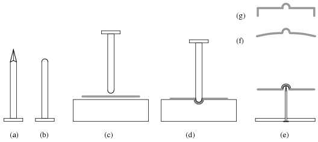
Verifique nuevamente el cableado. Verifique que cualquier cable pelado haya sido aislado. El circuito se puede encender sin el rotor. La lámpara debería encenderse. Ambas bobinas se calentarán en unos minutos. Un calentamiento excesivo significa que se debe sustituir una lámpara de menor potencia (mayor resistencia) y un condensador de menor valor en serie con las respectivas bobinas.
Coloque el rotor encima del pivote y muévalo entre ambas bobinas. Debería girar. Cuanto más cerca esté, más rápido debería girar. Ambas bobinas deben estar calientes, lo que indica energía. Pruebe rotores de diferentes tamaños y estilos. Pruebe con un rotor pequeño en el lado opuesto de las bobinas en comparación con la ilustración.
A falta de cable magnético #32 AWG, pruebe con 440 vueltas de cable de diámetro ligeramente mayor (menor número de AWG). Esto requerirá más de 4 capas para los giros requeridos. Una lámpara de noche puede ser menos costosa que el portalámparas de tamaño completo que se ilustra. Aunque las bombillas de luz nocturna tienen una potencia demasiado baja (3 o 7 vatios), las bombillas de 15 vatios se ajustan al casquillo.
Induction motor, large
PIEZAS Y MATERIALES
- Fuente de alimentación de CA: 120 VCA
- Condensador, 3,3 µF 120 VCA o 350 VCC, no polarizado
- Cable magnético #33 AWG, 2 libras
- tabla de madera de aprox. 6 a 12 pulgadas cuadradas.
- Cable de línea de CA con enchufe
- 5.1 inch dia. plastic 3 liter soda bottle
- bolígrafo desechado
- misceláneos pequeños bloques de madera
REFERENCIAS CRUZADAS
Lecciones en circuitos eléctricos, Volumen 2, capítulo 13: "Motores de CA", "Motores de inducción monofásicos", "Motor de condensador permanente dividido".
OBJETIVOS DE APRENDIZAJE
- Construir un motor de inducción de condensador dividido permanente de CA de gran tamaño para exhibición.
- Para ilustrar la simplicidad del motor de inducción de CA.
DIAGRAMA ESQUEMÁTICO
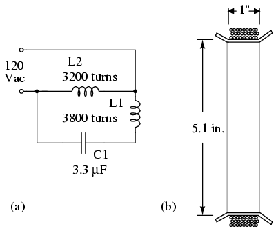
ILUSTRACIÓN
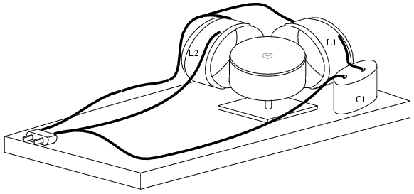
INSTRUCCIONES
Esta es una versión más grande de un "motor de inducción de fase dividida con condensador permanente". Hay dos bobinas de estator diferentes. El devanado L2 de 1,0 pulgada de ancho y 3200 vueltas se muestra en la ilustración anterior (b), enrollado sobre una sección de una botella de refresco de plástico de 3 litros de 5,1 pulgadas de diámetro. L1 tiene aproximadamente 3800 vueltas de alambre magnético esmaltado #33 AWG (calibre de alambre americano) enrollado sobre una sección de 1,25 de ancho de una botella de refresco, más ancho que el que se muestra en (b). Marque un cilindro de 1,25 pulgadas de ancho con márgenes de 0,25 pulgadas en cada extremo. El cable se enrollará en la zona de 1,25 pulgadas. La forma se corta de la botella por los bordes exteriores del margen. Los cortes de 0,25 pulgadas desde el margen hasta la zona de bobinado se espacian a intervalos de 1 pulgada alrededor de la circunferencia de ambos extremos para que el margen pueda doblarse a 90°.opara sujetar el cable en el formulario. Para evitar contar las 3800 vueltas, enrolle un alambre magnético de 1/8 de pulgada de espesor sobre el ancho de una pulgada del formulario. De lo contrario, cuenta las vueltas. Raspe el esmalte desde 1 pulgada en el extremo libre y raspe solo una pequeña sección desde el cable hasta el carrete. NO corte el cable del carrete. Mida la resistencia y calcule cuánto cable más debe enrollar para lograr 894 Ω. Aplique esmalte, esmalte de uñas, cinta adhesiva u otro aislante en el lugar desnudo del cable del carrete. Continúe enrollando y vuelva a verificar la resistencia. Una vez que se alcancen los 894 Ω aproximados, deje unos cuantos centímetros de cable magnético para el cable. Corta el cable del carrete. Asegure los devanados al molde con cordel u otros medios.
El devanado L1 de 3200 vueltas es de aproximadamente 744 Ω y está enrollado en una forma de 1,0 pulgada de ancho como se muestra en (b) de manera similar al devanado L2 anterior.
Quite el esmalte de 1 pulgada de los extremos de los cables magnéticos si aún no lo ha hecho. Empalme los extremos desnudos con un cable de conexión aislado de mayor calibre. Soldar el empalme. Aísle con cinta o tubo termorretráctil. Asegure el empalme al cuerpo de la bobina. Luego proceda con la segunda bobina. Las bobinas se pueden montar en una esquina de la base de madera. Alternativamente, para una mayor flexibilidad de uso, se pueden montar en paletas móviles.
Consulte tanto el diagrama esquemático como la ilustración para el montaje. Tenga en cuenta que las bobinas están montadas en ángulo recto. L2, la bobina más pequeña está conectada a ambos lados de la línea de 120 Vca. El condensador está conectado en serie con la bobina más ancha L1. El condensador proporciona un cambio de fase adelantado de la corriente con respecto al voltaje. El esquema y la ilustración no muestran ningún interruptor de alimentación ni fusible. Se recomienda agregar estas adiciones.
Si este dispositivo está diseñado para que lo utilicen personas no técnicas como una exhibición sin supervisión, todas las terminaciones desnudas expuestas, como el capacitor, deben protegerse contra los dedos cubriéndolas con protectores. El interruptor y el fusible mencionados anteriormente son necesarios. Finalmente, el esmalte de las bobinas solo proporciona una capa de aislamiento. Por seguridad, se requiere una segunda capa, como una envoltura aislante, una caja de plexiglás u otros medios. Reemplace todos los componentes de madera con plexiglás para una seguridad superior contra incendios en una exhibición sin supervisión.
El rotor debe estar hecho de un material ferromagnético como una lata de acero para verduras, una lata de pastel de frutas, etc. Una lata de verduras demasiado larga puede cortarse por la mitad. La ilustración del pequeño motor de inducción anterior muestra detalles de pivote y cojinete con hoyuelos del rotor. El rotor puede ser más pequeño que la forma de la bobina, como en el caso de una lata de verduras cortada. Incluso puede ser tan pequeño como el rotor de la tapa de la lata utilizado con el motor pequeño anterior. También es posible accionar un rotor más grande que las bobinas, como es el caso de la lata de pastel de frutas. Localice y marque el centro del rotor. El centro necesita tener hoyuelos. Seleccione un clavo de un octavo de pulgada de diámetro (unos pocos mm) (a) y lime o esmerile la punta. Utilice esto y un bloque de madera para hacer hoyuelos en el rotor como se muestra en el motor pequeño anterior. Una lata bastante larga se equilibra mejor que un rotor plano debido al centro de gravedad más bajo. La punta de un bolígrafo funciona bien como pivote para rotores más grandes. Monte el pivote en un pedestal de madera móvil.
Verifique nuevamente el cableado. Verifique que cualquier cable pelado haya sido aislado. El circuito se puede encender sin el rotor. Un calentamiento excesivo en L2 indica que se requieren más vueltas. El calor excesivo en L1 exige una reducción de la capacitancia de C1. La ausencia de calor indica un circuito abierto en la bobina afectada.
Coloque el rotor encima del pivote y muévalo entre ambas bobinas energizadas. Debería girar. Cuanto más cerca esté, más rápido debería girar. Ambas bobinas deben estar calientes, lo que indica energía. Pruebe rotores de diferentes tamaños y estilos. Pruebe con un rotor pequeño en el lado opuesto de las bobinas en comparación con la ilustración.
Se construyeron tres modelos de este motor utilizando alambre magnético #33 AWG porque había un carrete grande a mano. El cable magnético AWG n.° 32 probablemente sea más fácil de conseguir. Debería funcionar. Aunque la corriente será mayor debido a la menor resistencia del cable #32 de mayor diámetro. Si no dispone de un condensador de 3,3 µF, utilice algo cercano siempre que tenga una tensión nominal adecuada. El autor utilizó un condensador de funcionamiento de motor de CA desechado (en forma de bañera). No utilice un condensador de arranque del motor (cilindro negro). Estos solo se pueden usar durante unos segundos después del arranque del motor y pueden explotar si se usan por más tiempo.
Prueba esto:Es posible hacer girar simultáneamente más de un rotor. Por ejemplo, además del rotor principal dentro del ángulo recto formado por las bobinas, coloque un segundo rotor más pequeño (tapa de lata o botella) cerca del par de bobinas fuera del ángulo recto en el vértice.
Es posible invertir el sentido de rotación invirtiendo una de las bobinas. Si las bobinas están montadas en paletas móviles, gire una bobina 180o. Otro método, especialmente útil con bobinas fijas, es conectar una de las bobinas a un interruptor de inversión de polaridad DPDT. Por ejemplo, desconecte L2 y conéctelo a los limpiaparabrisas (contactos centrales) del interruptor DPDT. Los contactos superiores van a 120 Vac. Los contactos superiores también van a los contactos inferiores en un patrón de cruce en X.
Desfase
PIEZAS Y MATERIALES
- Fuente de alimentación de CA de bajo voltaje
- Dos capacitores, 0.1 µF cada uno, no polarizados (catálogo de Radio Shack # 272-135)
- Dos resistencias de 27 kΩ
Recomiendo los condensadores de disco cerámico porque son insensibles a la polaridad (no polarizados), económicos y duraderos. Evite los condensadores con cualquier tipo de marca de polaridad, ya que se destruirán cuando se alimenten con CA.
REFERENCIAS CRUZADAS
Lecciones en circuitos eléctricos, Volumen 2, capítulo 1: "Teoría básica de CA"
Lecciones en circuitos eléctricos, Volumen 2, capítulo 4: "Reactancia e impedancia - Capacitiva"
OBJETIVOS DE APRENDIZAJE
- Cómo los voltajes de CA desfasados no se suman algebraicamente, sino según la aritmética vectorial (fasorial)
DIAGRAMA ESQUEMÁTICO
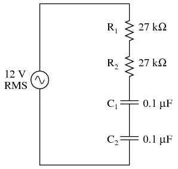
ILUSTRACIÓN
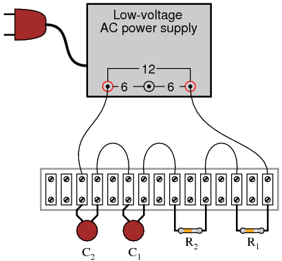
INSTRUCCIONES
Construya el circuito y mida las caídas de voltaje en cada componente con un voltímetro de CA. Mida el voltaje total (de suministro) con el mismo voltímetro. Descubrirás que las caídas de voltaje nonotsumar para igualar el voltaje total. Esto se debe a cambios de fase en el circuito: la caída de voltaje en los capacitores está desfasada con la caída de voltaje en las resistencias y, por lo tanto, las cifras de caída de voltaje no cuadran como cabría esperar. Teniendo en cuenta el ángulo de fase,dosuman para igualar el total, pero un voltímetro no proporciona mediciones del ángulo de fase, solo amplitud.
Intente medir la caída de voltaje en ambas resistencias a la vez. Esta caída de voltajevoluntadigual a la suma de las caídas de voltaje medidas en cada resistencia por separado. Esto le indica que las formas de onda de caída de voltaje de ambas resistencias están en fase entre sí, ya que se suman de manera simple y directa.
Mida la caída de voltaje en ambos capacitores a la vez. Esta caída de voltaje, al igual que la caída medida a través de las dos resistencias,voluntadigual a la suma de las caídas de voltaje medidas en cada capacitor por separado. Del mismo modo, esto le indica que las formas de onda de caída de voltaje de ambos condensadores están en fase entre sí.
Dado que la frecuencia del suministro de energía es de 60 Hz (frecuencia de energía doméstica en los Estados Unidos), calcule las impedancias para todos los componentes y determine todas las caídas de voltaje usando la Ley de Ohm (E=IZ; I=E/Z; Z=E/I). Las magnitudes polares de los resultados deben coincidir estrechamente con las lecturas de su voltímetro.
SIMULACIÓN POR COMPUTADORA
Esquema con números de nodo SPICE:
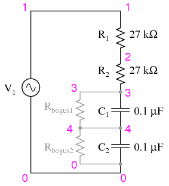
Las dos resistencias de gran valor Rfalso1y rfalso1están conectados a través de los condensadores para proporcionar una ruta de CC a tierra para que SPICE funcione. Esta es una "solución" para una de las peculiaridades de SPICE, para evitar que vea los condensadores como circuitos abiertos en su análisis. Estas dos resistencias son completamente innecesarias en el circuito real.
Netlist (cree un archivo de texto que contenga el siguiente texto, textualmente):
phase shift v1 1 0 ac 12 sin r1 1 2 27k r2 2 3 27k c1 3 4 0.1u c2 4 0 0.1u rbogus1 3 4 1e9 rbogus2 4 0 1e9 .ac lin 1 60 60 * Voltage across each component: .print ac v(1,2) v(2,3) v(3,4) v(4,0) * Voltage across pairs of similar components .print ac v(1,3) v(3,0) .end
Sound cancellation
PIEZAS Y MATERIALES
- Fuente de alimentación de CA de bajo voltaje
- Dos parlantes de audio
- Dos resistencias de 220 Ω
Los altavoces grandes de baja frecuencia ("woofer") son los más apropiados para este experimento. Para obtener resultados óptimos, los altavoces deben ser idénticos y estar montados en recintos.
REFERENCIAS CRUZADAS
Lecciones en circuitos eléctricos, Volumen 2, capítulo 1: "Teoría básica de CA"
OBJETIVOS DE APRENDIZAJE
- Cómo el cambio de fase puede hacer que las ondas se refuercen o interfieran entre sí
- La importancia de la "fase" de los altavoces en los sistemas estéreo
DIAGRAMA ESQUEMÁTICO
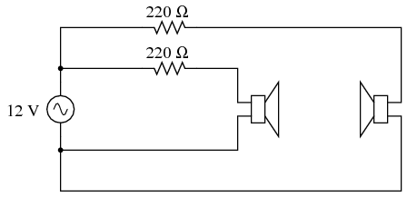
ILUSTRACIÓN
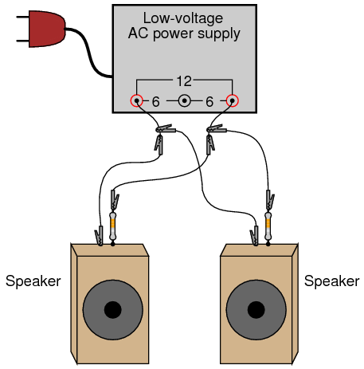
INSTRUCCIONES
Conecte cada altavoz a la fuente de alimentación de CA de bajo voltaje a través de una resistencia de 220 Ω. La resistencia limita la cantidad de energía entregada a cada altavoz por la fuente de alimentación. Se debe escuchar un tono grave de 60 Hertz por los parlantes. Si el tono suena demasiado alto, utilice resistencias de mayor valor.
Con ambos parlantes conectados y produciendo sonido, colóquelos de modo que estén a solo uno o dos pies de distancia, uno frente al otro. Escuche el volumen del tono de 60 Hertz. Ahora, invierta las conexiones (la "polaridad") de soloonede los altavoces y observe el volumen nuevamente. Intente cambiar la polaridad de un altavoz de un lado a otro de original a invertida, comparando los niveles de volumen en cada sentido. ¿Qué notas?
Al invertir las conexiones de los cables a un altavoz, está invirtiendo lafasede la onda sonora de ese hablante en referencia al otro hablante. En un modo, las ondas sonoras se reforzarán entre sí para obtener un volumen fuerte. En el otro modo, las ondas sonoras interferirán destructivamente, lo que dará como resultado una disminución del volumen. Este fenómeno es común aallEventos ondulatorios: ondas sonoras, señales eléctricas ("ondas" de voltaje), ondas en el agua e incluso ondas luminosas.
Varios altavoces en un sistema de sonido estéreo deben estar "en fase" adecuadamente para que sus respectivas ondas de sonido no se cancelen entre sí, dejando menos nivel de sonido total para que lo escuchen los oyentes. Por lo tanto, incluso en un sistema de CA donde realmente no existe una "polaridad" constante, la secuencia de conexiones de cables puede marcar una diferencia significativa en el rendimiento del sistema.
Este principio de reducción de volumen mediante interferencia destructiva puede aprovecharse para la cancelación de ruido. Dichos sistemas toman muestras de la forma de onda del ruido ambiental y luego producen una señal de sonido idéntica 180odesfasado con el ruido. Cuando las dos señales de sonido se encuentran, se cancelan entre sí, lo ideal es eliminar todo el ruido. Como se podría suponer, esto es mucho más fácil de lograr con fuentes de ruido de frecuencia y amplitud constantes. La cancelación de ruido aleatorio de amplio espectro es muy difícil, ya que algún tipo de circuito de procesamiento de señal debe muestrear el ruido y generar precisamente la cantidad correcta de sonido de cancelación en el momento justo para que sea efectivo.
Teclado musical como generador de señal
PIEZAS Y MATERIALES
- "Teclado" electrónico (musical)
- Conector tipo auricular "mono" (no estéreo)
- Transformador de adaptación de impedancia (relación de 1k Ω a 8 Ω; catálogo de Radio Shack # 273-1380)
- 10 kΩ resistor
En este experimento, aprenderá a utilizar un teclado musical electrónico como fuente de señales de voltaje CA de frecuencia variable. No es necesario comprar un teclado costoso para esto, pero sería bueno uno con al menos unas pocas docenas de selecciones de "voz" (piano, flauta, arpa, etc.). El enchufe "mono" se conectará a la toma de auriculares del teclado musical, así que consigue un enchufe que sea del tamaño correcto para el teclado.
El "transformador de adaptación de impedancia" es un transformador de tamaño pequeño que se consigue fácilmente en una tienda de suministros electrónicos. Uno puede ser encontrado en una radio pequeña y chatarra: se conecta entre el altavoz y la placa de circuito (amplificador), por lo que es fácilmente identificable por su ubicación. El devanado primario está clasificado en ohmios de impedancia (1000 Ω) y generalmente tiene una derivación central. El devanado secundario es de 8 Ω y no tiene derivación central. Estas cifras de impedancia no son las mismas que la resistencia de CC, así que no espere leer 1000 Ω y 8 Ω con su ohmímetro; sin embargo, el devanado de 1000 Ω leerámásresistencia que el devanado de 8 Ω, porque tiene más vueltas.
Si no se puede conseguir un transformador de este tipo para el experimento, un transformador de potencia reductor normal de 120 V/6 V también funciona bastante bien.
REFERENCIAS CRUZADAS
Lecciones en circuitos eléctricos, Volumen 2, capítulo 1: "Teoría básica de CA"
Lecciones en circuitos eléctricos, Volumen 2, capítulo 7: "Señales de CA de frecuencia mixta"
OBJETIVOS DE APRENDIZAJE
- Diferencia entre amplitud y frecuencia.
- Medición de voltaje CA, corriente con un medidor.
- Operación del transformador, elevador
DIAGRAMA ESQUEMÁTICO
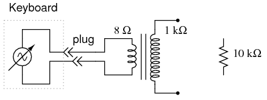
ILUSTRACIÓN
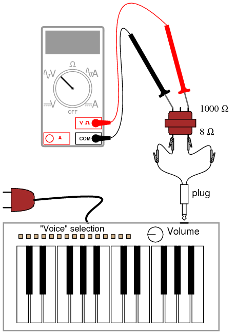
INSTRUCCIONES
Normalmente, un estudiante de electrónica en una escuela tendría acceso a un dispositivo llamadogenerador de señal, ogenerador de funciones, utilizado para crear formas de onda de voltaje de frecuencia variable para alimentar circuitos de CA. Un teclado electrónico económico es una alternativa más económica a un generador de señales normal y proporciona funciones que la mayoría de los generadores de señales no pueden igualar, como producirfrecuencia mixtaondas.
Para "aprovechar" el voltaje de CA producido por el teclado, deberá insertar un enchufe en el conector para auriculares (a veces simplemente etiquetado como "teléfono" en el teclado) completo con dos cables para la conexión a circuitos de su propio diseño. Cuando inserte el enchufe en el conector, el altavoz normal integrado en el teclado se desconectará (suponiendo que el teclado esté equipado con uno) y la señal que solía alimentar ese altavoz estará disponible en los cables del enchufe. En este experimento en particular, recomiendo usar el teclado para alimentar el lado de 8 Ω de un transformador de "salida" de audio para aumentar el voltaje a un nivel superior. Si utiliza un transformador de potencia en lugar de un transformador de salida de audio, conecte el teclado al devanado de bajo voltaje para que funcione como un dispositivo elevador. Los teclados producen señales de muy bajo voltaje, por lo que no existe riesgo de descarga eléctrica en este experimento.
Usando un teclado Yamaha económico, descubrí que la configuración de voz "flauta de pan" produce la forma de onda sinusoidal más verdadera. Se recomienda comenzar a experimentar con esta forma de onda, o algo parecido (una flauta, por ejemplo), ya que está relativamente libre de armónicos (muchas formas de onda mezcladas, de frecuencia entera y múltiple). Al estar compuesta de una sola frecuencia, es una forma de onda menos compleja de medir con su multímetro. Asegúrese de que el teclado esté configurado en un modo en el que la nota se sostendrá mientras se mantiene presionada cualquier tecla; de lo contrario, la amplitud (voltaje) de la forma de onda cambiará constantemente (alta cuando se presiona la tecla por primera vez, luego decaerá rápidamente a cero).
Usando un voltímetro de CA, lea el voltaje directamente desde el enchufe de los auriculares. Luego, lea el voltaje aumentado por el transformador, observando la relación de paso. Si su multímetro tiene una función de "frecuencia", úsela para medir la frecuencia de la forma de onda producida por el teclado. Pruebe diferentes notas en el teclado y registre sus frecuencias. ¿Notas un patrón en la frecuencia al activar diferentes notas, especialmente teclas que son similares entre sí (observa el patrón de 12 teclas en blanco y negro que se repite en el teclado de izquierda a derecha)? Si no le importa hacer marcas en el teclado, escriba las frecuencias en hercios con tinta negra en las teclas blancas, cerca de la parte superior, donde es menos probable que los dedos borren los números.
Idealmente, no debería haber cambios en la amplitud de la señal (voltaje) cuando se prueban diferentes frecuencias (notas en el teclado). Si ajusta el volumen hacia arriba y hacia abajo, debería descubrir que los cambios en la amplitud deberían tener poco o ningún impacto en la medición de la frecuencia. La amplitud y la frecuencia son dos aspectos completamente independientes de una señal de CA.
Intente conectar la salida del teclado a una resistencia de carga de 10 kΩ (a través del enchufe de los auriculares) y mida la corriente alterna con su multímetro. Si su multímetro tiene una función de frecuencia, también puede medir la frecuencia de esta corriente. Debe ser el mismo que el voltaje para cualquier nota determinada (tecla del teclado).
PC Oscilloscope
PIEZAS Y MATERIALES
- Computadora personal compatible con IBM con tarjeta de sonido, con Windows 3.1 o superior
- Software Winscope, descargado gratis de Internet
- "Teclado" electrónico (musical)
- Conector tipo auricular "mono" (no estéreo) para teclado
- Conector tipo auricular "mono" (no estéreo) para entrada de micrófono de tarjeta de sonido de computadora
- 10 kΩ potentiometer
El programa Winscope que he utilizado fue escrito por el Dr. Constantin Zeldovich, para uso personal y académico gratuito. Traza formas de onda en la pantalla de la computadora en respuesta a señales de voltaje de CA interpretadas por la entrada del micrófono de la tarjeta de sonido. Un programa similar, llamadooscopio, está hecho para el sistema operativo Linux. Si no tiene acceso a ninguno de los programas, puede utilizar la utilidad "grabadora de sonido" que viene con la mayoría de las versiones de Microsoft Windows para mostrar formas de onda crudas.
REFERENCIAS CRUZADAS
Lecciones en circuitos eléctricos, Volumen 2, capítulo 7: "Señales de CA de frecuencia mixta"
Lecciones en circuitos eléctricos, Volumen 2, capítulo 12: "Circuitos de medición de CA"
OBJETIVOS DE APRENDIZAJE
- Uso de la computadora
- Función básica de osciloscopio
DIAGRAMA ESQUEMÁTICO
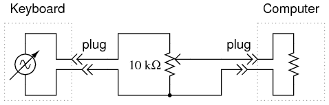
ILUSTRACIÓN
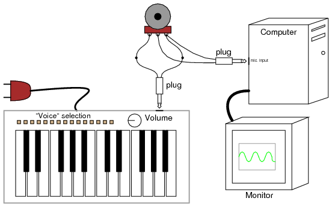
INSTRUCCIONES
El osciloscopio es un instrumento de prueba indispensable para el estudiante y profesional de la electrónica. Ningún laboratorio de electrónica serio debería carecer de uno (¡o dos!). Desafortunadamente, los osciloscopios comerciales tienden a ser costosos y es casi imposible diseñar y construir uno propio sin otro osciloscopio que solucione el problema. Sin embargo, la tarjeta de sonido de una computadora personal es capaz de "digitalizar" señales de CA de bajo voltaje desde unos pocos cientos de hercios hasta varios miles de hercios con una resolución respetable, y hay software gratuito disponible para mostrar estas señales en forma de osciloscopio en la pantalla de la computadora. Dado que la mayoría de las personas tienen una computadora personal o pueden obtener una por menos costo que un osciloscopio, ésta se convierte en una alternativa viable para el experimentador con un presupuesto limitado.
Una palabra de precaución:¡Puede causar daños importantes al hardware de su computadora si se conectan señales de voltaje excesivo a la entrada de micrófono de la tarjeta de sonido!Los voltajes de CA producidos por un teclado musical son demasiado bajos para causar daños a su computadora a través de la tarjeta de sonido, pero otras fuentes de voltaje pueden ser peligrosas para la salud de su computadora. ¡Utilice este "osciloscopio" bajo su propia responsabilidad!
Utilizando la disposición de teclado y enchufe descrita en el experimento anterior, conecte la salida del teclado a los terminales exteriores de un potenciómetro de 10 kΩ. Suelde dos cables a los puntos de conexión en el enchufe de entrada del micrófono de la tarjeta de sonido, de modo que tenga un conjunto de "cables de prueba" para el "osciloscopio". Conecte estos cables de prueba al potenciómetro: entre el terminal central (el limpiador) y cualquiera de los terminales exteriores.
Inicie el programa Winscope y haga clic en el icono de "flecha" en la esquina superior izquierda (se parece a la flecha de "reproducir" que se ve en los botones de control del reproductor de cintas y de CD). Si presiona una tecla en el teclado musical, debería ver algún tipo de forma de onda en la pantalla. Elija la "flauta de pan" o alguna otra voz parecida a una flauta en el teclado musical para obtener la mejor forma de onda sinusoidal. Si la computadora muestra una forma de onda que parece una onda cuadrada, es necesario ajustar el potenciómetro para obtener una señal de menor amplitud. Casi cualquier forma de onda será "recortada" para que parezca una onda cuadrada si excede el límite de amplitud de la tarjeta de sonido.
Pruebe diferentes "voces" de instrumentos en el teclado musical y observe las diferentes formas de onda. Observe cuán complejas son algunas de las formas de onda, en comparación con la voz de flauta de pan. Experimente con los diferentes controles en la ventana de Winscope y observe cómo cambian la apariencia de la forma de onda.
Como instrumento de prueba, este "osciloscopio" es bastante pobre. Casi no tiene capacidad para realizar mediciones precisas de voltaje, aunque su precisión de frecuencia es sorprendentemente buena. Esmuylimitado en los rangos de voltaje y frecuencia que puede mostrar, relegándolo al análisis de tonos de audio de rango bajo y medio. He tenido muy poco éxito en lograr que el "osciloscopio" muestre buenas ondas cuadradas, presumiblemente debido a su respuesta de frecuencia limitada. Además, el condensador de acoplamiento que se encuentra en los circuitos de entrada de micrófono de las tarjetas de sonido impide que mida el voltaje de CC: es como si la característica de "acoplamiento de CA" de un osciloscopio normal estuviera "activada".
A pesar de estas deficiencias, es útil como herramienta de demostración y para exploraciones iniciales en el análisis de formas de onda para el estudiante principiante de electrónica. Para aquellos que estén interesados, existen varios dispositivos adaptadores de osciloscopio de calidad profesional fabricados para computadoras personales cuyo rendimiento es mucho mayor que el de una tarjeta de sonido, y normalmente se venden a un costo menor que un osciloscopio independiente completo (alrededor de $400, año 2002). Radio Shack vende uno fabricado por Velleman, número de catálogo 910-3914. Tener una computadora como medio de visualización trae muchas ventajas, una de las cuales es la capacidad de almacenar fácilmente imágenes de formas de onda como archivos digitales.
Análisis de formas de onda
PIEZAS Y MATERIALES
- Computadora personal compatible con IBM con tarjeta de sonido, con Windows 3.1 o superior
- Software Winscope, descargado gratis de Internet
- "Teclado" electrónico (musical)
- Conector tipo auricular "mono" (no estéreo) para teclado
- Conector tipo auricular "mono" (no estéreo) para entrada de micrófono de tarjeta de sonido de computadora, con cables para conectar a fuentes de voltaje
- 10 kΩ potentiometer
Las piezas y el equipo para este experimento son idénticos a los necesarios para el experimento del "osciloscopio de PC".
REFERENCIAS CRUZADAS
Lecciones en circuitos eléctricos, Volumen 2, capítulo 7: "Señales de CA de frecuencia mixta"
OBJETIVOS DE APRENDIZAJE
- Comprender la diferencia entre gráficos en el dominio del tiempo y en el dominio de la frecuencia
- Desarrollar un sentido cualitativo del análisis de Fourier.
DIAGRAMA ESQUEMÁTICO
ILUSTRACIÓN
INSTRUCCIONES
El programa Winscope viene con otra característica además de la típica visualización del osciloscopio en "dominio del tiempo": visualización en "dominio de frecuencia", que traza la amplitud (vertical) sobre la frecuencia (horizontal). La pantalla de "dominio del tiempo" de un osciloscopio traza la amplitud (vertical) a lo largo del tiempo (horizontal), lo cual está bien para mostrar la forma de onda. Sin embargo, cuando es deseable ver la constituyente armónica de una onda compleja, la mejor herramienta es un gráfico en el dominio de la frecuencia.
Si usa Winscope, haga clic en el ícono "arcoíris" para cambiar al modo de dominio de frecuencia. Genere una señal de onda sinusoidal usando el teclado musical (flauta de pan o voz de flauta) y debería ver un único "pico" en la pantalla, correspondiente a la amplitud de la señal de frecuencia única. Al mover el cursor del mouse debajo del pico, la frecuencia debería mostrarse numéricamente en la parte inferior de la pantalla.
Si se activan dos notas en el teclado musical, el gráfico debería mostrar dos picos distintos, cada uno correspondiente a una nota (frecuencia) particular. Los acordes básicos (tres notas) producen tres picos en el gráfico en el dominio de la frecuencia, y así sucesivamente. Compare esto con el gráfico de osciloscopio normal (dominio de tiempo) haciendo clic una vez más en el icono del "arco iris". Un acorde musical mostrado en formato de dominio de tiempo es una forma de onda muy compleja, pero es bastante sencillo de resolver en notas constituyentes (frecuencias) en una visualización de dominio de frecuencia.
Experimente con diferentes "voces" de instrumentos en el teclado musical, correlacionando el gráfico en el dominio del tiempo con el gráfico en el dominio de la frecuencia. Las formas de onda que son simétricas por encima y por debajo de sus líneas centrales contienen sólo armónicos impares (múltiplos enteros impares de la base, ofundamentalfrecuencia), mientras que las formas de onda asimétricas también contienen armónicos pares. Utilice el cursor para localizar la frecuencia específica de cada pico en el gráfico y una calculadora para determinar si cada pico tiene un número par o impar.
Circuito resonante (tanque) LC
PIEZAS Y MATERIALES
- Osciloscopio
- Surtido de condensadores no polarizados (0,1 µF a 10 µF)
- Transformador de potencia reductor (120V / 6 V)
- 10 kΩ resistors
- Batería de seis voltios
El transformador de potencia se utiliza simplemente como inductor, con un solo devanado conectado. El devanado no utilizado debe dejarse abierto. Un inductor simple con núcleo de hierro y un solo devanado (a veces conocido comoahogo) también se pueden utilizar, pero estos inductores son más difíciles de obtener que los transformadores de potencia.
REFERENCIAS CRUZADAS
Lecciones en circuitos eléctricos, Volumen 2, capítulo 6: "Resonancia"
OBJETIVOS DE APRENDIZAJE
- Cómo construir un circuito resonante
- Efectos del tamaño del condensador sobre la frecuencia resonante.
- Cómo producir antiresonancia
DIAGRAMA ESQUEMÁTICO
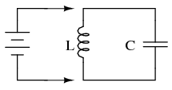
ILUSTRACIÓN
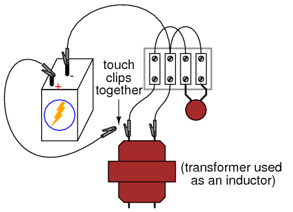
INSTRUCCIONES
Si un inductor y un capacitor se conectan en paralelo entre sí y luego se energizan brevemente conectándolos a una fuente de voltaje de CC, se producirán oscilaciones a medida que se intercambia energía del capacitor al inductor y viceversa. Estas oscilaciones se pueden ver con un osciloscopio conectado en paralelo con el circuito inductor/condensador. Los circuitos de inductores/condensadores en paralelo se conocen comúnmente comocircuitos de tanques.
Nota importante:recomiendocontraUtilizar un PC/tarjeta de sonido como osciloscopio para este experimento, ya que el inductor puede generar tensiones muy altas cuando se desconecta la batería ("contragolpe" inductivo). Estos altos voltajes seguramente dañarán la entrada de la tarjeta de sonido y quizás también otras partes de la computadora.
La frecuencia natural de un circuito de tanque, llamadafrecuencia resonante, está determinado por el tamaño del inductor y el tamaño del capacitor, según la siguiente ecuación:
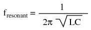
Muchos transformadores de potencia pequeños tienen inductancias de devanado primario (120 voltios) de aproximadamente 1 H. Utilice esta cifra como una estimación aproximada de la inductancia de su circuito para calcular la frecuencia de oscilación esperada.
Lo ideal es que las oscilaciones producidas por un circuito de tanque continúen indefinidamente. De manera realista, las oscilaciones disminuirán en amplitud en el transcurso de varios ciclos debido a las pérdidas resistivas y magnéticas del inductor. Los inductores con una calificación "Q" alta producirán, por supuesto, oscilaciones más duraderas que los inductores con Q baja.
Intente cambiar los valores del condensador y observe el efecto sobre la frecuencia de oscilación. También podrías notar cambios en la duración de las oscilaciones, debido al tamaño del capacitor. Dado que sabe cómo calcular la frecuencia resonante a partir de la inductancia y la capacitancia, ¿puede encontrar una manera de calcular la inductancia del inductor a partir de valores conocidos de capacitancia del circuito (medida con un medidor de capacitancia) y frecuencia resonante (medida con un osciloscopio)?
Se puede agregar resistencia intencionalmente al circuito, ya sea en serie o en paralelo, con el expreso propósito de amortiguar las oscilaciones. Este efecto de la oscilación del circuito del tanque de amortiguación de resistencia se conoce comoantirresonancia. Es análoga a la acción de un amortiguador al amortiguar el rebote de un automóvil después de chocar contra un bache en la carretera.
SIMULACIÓN POR COMPUTADORA
Esquema con números de nodo SPICE:
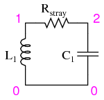
RextraviadoSe coloca en el circuito para amortiguar las oscilaciones y producir una simulación más realista. Una R más bajaextraviadoEl valor provoca oscilaciones de mayor duración porque se disipa menos energía. La eliminación de esta resistencia del circuito da como resultado una oscilación sin fin.
Netlist (cree un archivo de texto que contenga el siguiente texto, textualmente):
tank circuit with loss l1 1 0 1 ic=0 rstray 1 2 1000 c1 2 0 0.1u ic=6 .tran 0.1m 20m uic .plot tran v(1,0) .end
Acoplamiento de señales
PIEZAS Y MATERIALES
- 6 volt battery
- Un condensador, 0,22 µF (catálogo de Radio Shack n.º 272-1070 o equivalente)
- Un condensador, 0,047 µF (catálogo de Radio Shack n.º 272-134 o equivalente)
- Motor pequeño "hobby", tipo imán permanente (catálogo de Radio Shack # 273-223 o equivalente)
- Detector de audio con auriculares.
- Longitud del cable telefónico, varios pies de largo (catálogo de Radio Shack # 278-872)
El cable telefónico también está disponible en ferreterías. Cualquier cable multiconductor no blindado será suficiente para este experimento. Los cables con conductores finos (el cable telefónico suele ser de calibre 24) producen un efecto más pronunciado.
REFERENCIAS CRUZADAS
Lecciones en circuitos eléctricos, Volumen 2, capítulo 7: "Señales de CA de frecuencia mixta"
Lecciones en circuitos eléctricos, Volumen 2, capítulo 8: "Filtros"
OBJETIVOS DE APRENDIZAJE
- Cómo "acoplar" señales de CA y bloquear señales de CC a un instrumento de medición
- Cómo se produce el acoplamiento perdido en los cables
- Técnicas para minimizar el acoplamiento entre cables
DIAGRAMA ESQUEMÁTICO
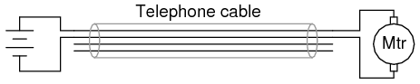
ILUSTRACIÓN
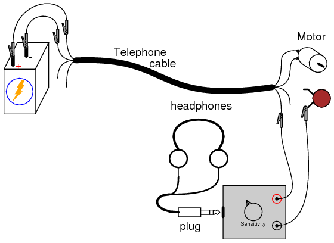
INSTRUCCIONES
Conecte el motor a la batería utilizando dos de los cuatro conductores del cable telefónico. El motor debería funcionar como se esperaba. Ahora, conecte el detector de señal de audio a través de los terminales del motor, con el capacitor de 0.047 µF en serie, así:
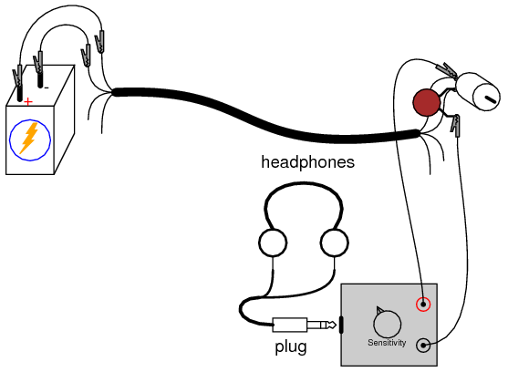
Debería poder escuchar un "zumbido" o "quejido" en los auriculares, que representa el voltaje de "ruido" de CA producido por el motor cuando las escobillas hacen y rompen el contacto con las barras giratorias del conmutador. El propósito del capacitor en serie es actuar como un filtro de paso alto, de modo que el detector solo reciba el voltaje de CA a través de los terminales del motor, no ningún voltaje de CC. Así es precisamente como los osciloscopios proporcionan una función de "acoplamiento de CA" para medir el contenido de CA de una señal sin ningún voltaje de polarización de CC: un condensador se conecta en serie con una sonda de prueba.
Idealmente, uno esperaría nada más que tensión continua pura en los terminales del motor, porque el motor está conectado directamente en paralelo con la batería. Dado que los terminales del motor son eléctricamente comunes con los respectivos terminales de la batería, y la naturaleza de la batería es mantener un voltaje de CC constante, nada más que voltaje de CC debería aparecer en los terminales del motor, ¿verdad? Bueno, debido a la resistencia interna de la batería y a lo largo de la longitud del conductor, los pulsos de corriente consumidos por el motor producen "caídas" de voltaje oscilante en los terminales del motor, lo que provoca el "ruido" de CA que escucha el detector:
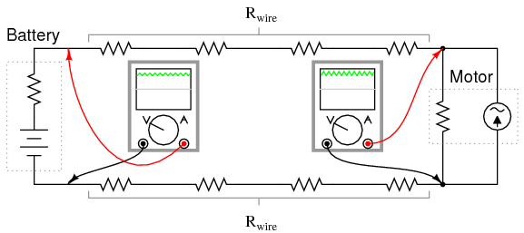
Utilice el detector de audio para medir el voltaje de "ruido" directamente a través de la batería. Dado que el ruido de CA se produce en este circuito mediante caídas de voltaje pulsantes a lo largo de resistencias parásitas, cuanto menos resistencia midamos, menos voltaje de ruido deberíamos detectar:
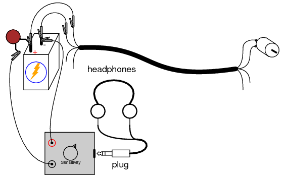
También puede medir la caída de voltaje de ruido a lo largo de cualquiera de los conductores del cable telefónico que suministra energía al motor, conectando el detector de audio entre ambos extremos de un solo cable conductor. El ruido detectado aquí proviene de impulsos de corriente a través de la resistencia del cable:
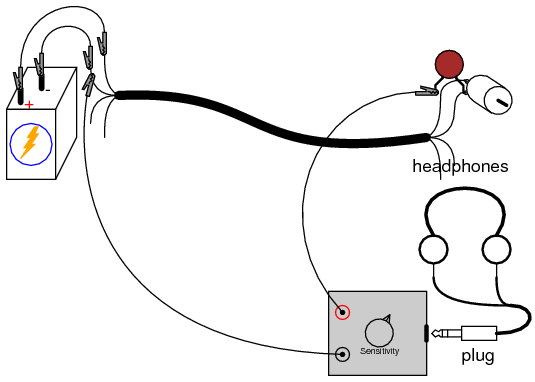
Ahora que hemos establecido cómo se crea y distribuye el ruido de CA en este circuito, exploremos cómo seacopladoa los hilos adyacentes del cable. Utilice el detector de audio para medir el voltaje entre uno de los terminales del motor y uno de los cables no utilizados del cable telefónico. El capacitor de 0.047 µF no es necesario en este ejercicio, porque de todos modos no hay voltaje de CC entre estos puntos para que el detector lo detecte:
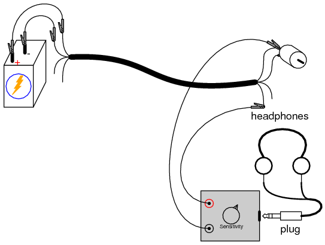
El voltaje de ruido detectado aquí se debe a la capacitancia parásita entre conductores de cable adyacentes que crean una "ruta" de corriente CA entre los cables. Recuerde que en realidad no pasa corrientea través deuna capacitancia, pero la acción alterna de carga y descarga de una capacitancia, ya sea intencional o no, proporciona a lacorriente alternauna especie de camino.
Si intentáramos conducir una señal de voltaje entre uno de los cables no utilizados y un punto común con el motor, esa señal se vería contaminada por el ruido del voltaje del motor. Esto podría ser bastante perjudicial, dependiendo de cuánto ruido se acoplara entre los dos circuitos y de qué tan sensible fuera un circuito al ruido del otro. Dado que el fenómeno de acoplamiento primario en este circuito es de naturaleza capacitiva, los voltajes de ruido de mayor frecuencia están más fuertemente acoplados que los voltajes de ruido de menor frecuencia.
Si la señal adicional fuera una señal de CC, sin que se esperara CA en ella, podríamos mitigar el problema del ruido acoplado "desacoplando" el ruido de CA con un condensador relativamente grande conectado a través de los conductores de la señal de CC. Utilice el condensador de 0,22 µF para este propósito, como se muestra:
The condensador de desacoplamientoactúa como un cortocircuito práctico para cualquier voltaje de ruido de CA, sin afectar en absoluto las señales de voltaje de CC entre esos dos puntos. Siempre que el valor del condensador de desacoplamiento sea significativamente mayor que la capacitancia parásita de "acoplamiento" entre los conductores del cable, el voltaje de ruido de CA se mantendrá al mínimo.
Otra forma de minimizar el ruido acoplado en un cable es evitar que dos circuitos compartan un conductor común. Para ilustrar, conecte el detector de audio entre los dos cables no utilizados y escuche una señal de ruido:
Debería detectarse mucho menos ruido entre dos conductores no utilizados que entre un conductor no utilizado y uno utilizado en el circuito del motor. La razón de esta drástica reducción del ruido es que la capacitancia parásita entre los conductores del cable tiende a acoplar losmismovoltaje de ruido aambosde los conductores no utilizados en proporciones aproximadamente iguales. Por lo tanto, al medir el voltajeentreestos dos conductores, el detector sólo "ve" la diferencia entre dos señales de ruido aproximadamente idénticas.
Lecciones en circuitos eléctricoscopyright (C) 2002-2023 Tony R. Kuphaldt, según los términos y condiciones delCC BY License.